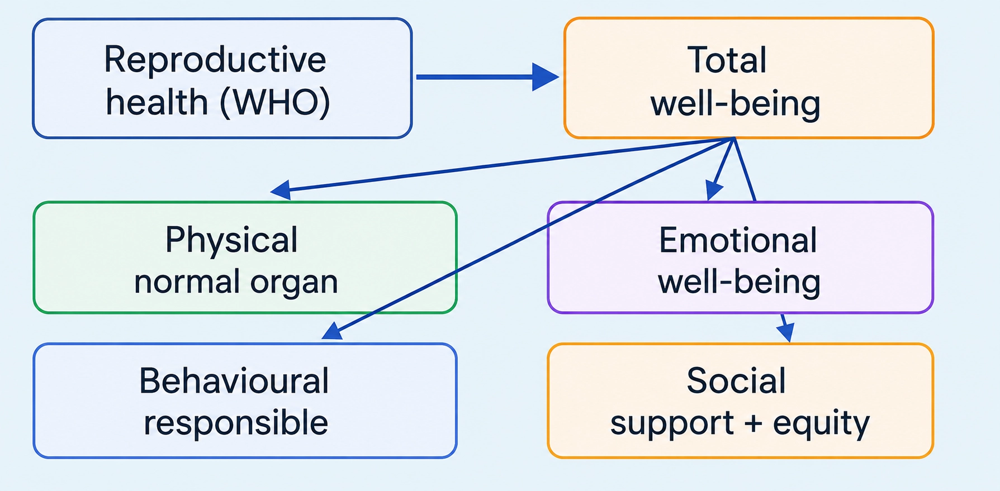
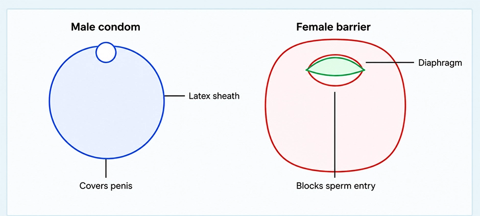

Biology
Reproductive Health
WHO/NCERT: total well-being in all matters related to reproduction; not merely absence of disease
REPRODUCTIVE HEALTH: CONCEPT
📖Definition & Introduction
- Reproductive health means total well-being in all matters related to reproduction (WHO/NCERT).
- It includes healthy reproductive organs with normal functions.
- It also includes emotional, behavioural and social well-being in sex-related matters.
- Broader than “no disease”: requires informed, safe and responsible behaviour.
- Needs supportive social conditions such as access to correct information and health services.
🖼️Diagram

🎯Key Concepts
- WHOWHO definition: complete well-being in all matters related to reproduction.
- PPhysical: normal structure and function of reproductive organs.
- EEmotional: healthy attitudes; reduced stress/stigma; psychological well-being.
- BBehavioural: safe and hygienic practices; informed decisions; respect and consent.
- SSocial: supportive environment; gender equality; protection from coercion/abuse.
- sociReproductively healthy society: normal reproductive organs + normal emotional and behavioural interactions in all sex-related aspects.
🔎SCOPE: WHAT ALL IS INCLUDED?
- Physical: structurally normal organs; normal reproductive functions.
- Emotional: psychological well-being in sex- and reproduction-related matters.
- Behavioural: informed, safe and hygienic practices; timely medical consultation.
- Social: dignity and equality; freedom from coercion/violence; supportive community.
- Not just no disease: includes correct information, informed choices and access to services.
⚙️REPRODUCTIVELY HEALTHY SOCIETY: KEY FEATURES (NCERT)
- People have physically and functionally normal reproductive organs.
- There are normal emotional and behavioural interactions in all sex-related aspects.
- Awareness + healthcare facilities help achieve reproductive well-being at society level.
- Discourages social evils like sex abuse, sex-related crimes and gender bias.
⚖️Reproductive health vs only absence of disease
| Basis | Only absence of disease | Reproductive health (WHO concept) |
|---|---|---|
| Meaning | No infection/abnormality detected | Total well-being in all matters related to reproduction |
| Domains covered | Mainly physical | Physical + emotional + behavioural + social |
| Focus | Diagnosis and treatment of disease | Prevention + correct information + informed, safe choices + supportive conditions |
| Example | STI-negative status (only one physical indicator) | STI-negative + correct knowledge + safe practices + access to care and support |
✏️Solved Q&A
1
A student writes: "Reproductive health means no STDs." Is this complete? Justify using WHO/NCERT concept.
Answer:
WHO/NCERT defines reproductive health as total well-being in all matters related to reproduction.
Absence of STDs is only a part of the physical aspect of reproductive health.
A complete answer must also include emotional, behavioural and social well-being.
WHO/NCERT defines reproductive health as total well-being in all matters related to reproduction.
Absence of STDs is only a part of the physical aspect of reproductive health.
A complete answer must also include emotional, behavioural and social well-being.
✓ No. Being STD-free alone is insufficient; reproductive health includes physical, emotional, behavioural and social well-being.
2
State any two features of a reproductively healthy society (NCERT line) and explain their importance.
Answer:
Feature 1: Physically and functionally normal reproductive organs → enables normal reproductive functions.
Feature 2: Normal emotional and behavioural interactions in all sex-related aspects → promotes responsible, safe relationships and reduces harm.
Feature 1: Physically and functionally normal reproductive organs → enables normal reproductive functions.
Feature 2: Normal emotional and behavioural interactions in all sex-related aspects → promotes responsible, safe relationships and reduces harm.
✓ Normal organs and normal emotional/behavioural interactions are essential components of total reproductive well-being at the society level.
⭐Important Points
- NCERT/WHO: reproductive health = total well-being in all aspects of reproduction.
- Four aspects to write: physical, emotional, behavioural, social.
- Not only “no disease”: includes informed, safe, responsible behaviour.
- Reproductively healthy society (NCERT): normal organs + normal emotional/behavioural interactions.
- For full marks, link concept to awareness + healthcare facilities + supportive social conditions.
💡Memory Technique
“Mnemonic: P-E-B-S”
📌Quick Recap
Definition (WHO/NCERT): reproductive health = total well-being in all aspects of reproduction.Aspects: physical + emotional + behavioural + social.Reproductively healthy society: physically and functionally normal reproductive organs.Reproductively healthy society: normal emotional and behavioural interactions in sex-related aspects.Key idea: broader than “no disease”; needs correct information and supportive social conditions.
India’s shift from 1951 Family Planning to RCH: awareness + facilities + measurable outcomes
RCH PROBLEMS AND STRATEGIES
📖Definition & Introduction
- RCH (Reproductive and Child Health Care) is a broadened national programme to build a reproductively healthy society.
- India began national action with Family Planning programmes in 1951, later expanded to RCH after periodic assessment.
- RCH programmes repeatedly emphasise two major tasks: awareness generation and providing facilities + support.
- Awareness targets adolescents, marriageable-age groups, and fertile couples for informed, safe, responsible decisions.
- Implementation needs infrastructure, professional expertise, and material support for reproductive health services.
- Improvement is judged by indicators like medically assisted/safe deliveries, lower MMR/IMR, better STD detection/cure, and small-family trend.
🖼️Diagram
🎯Key Concepts
- 📅1951: Family Planning started; later expanded into RCH for wider reproductive + child health goals.
- 📣Awareness via media, Govt/NGOs, and personal sources: parents, teachers, friends.
- 🏫Sex education in schools gives right information; reduces myths and misconceptions; promotes hygienic practices and STD prevention.
- 🏥Facilities/support cover pregnancy care, safe delivery, contraception, STDs, abortions, menstrual problems and infertility.
- ⚖️Legal/social focus: ban on sex-determination misuse of amniocentesis to curb female foeticide.
- 📉Indicators: more medically assisted deliveries, better post-natal care, decreased MMR and IMR, better STD detection/cure.
🔎AWARENESS GENERATION: WHAT TO TEACH + WHO TEACHES
- Core content: reproductive organs; adolescence changes; safe/hygienic practices; STDs and AIDS.
- School sex education: prevents myths and misconceptions; reduces fear/guilt; promotes responsible behaviour.
- Fertile couples/marriageable age: birth control options; antenatal care; post-natal care; importance of breast feeding.
- Social awareness: problems due to uncontrolled population growth; sex-abuse and sex-related crimes.
- Channels: audio-visual and print media; governmental and non-governmental agencies; parents/teachers/peers.
⚙️FACILITIES + SUPPORT: WHAT MUST EXIST FOR RCH TO WORK
- Infrastructure: clinics/hospitals; maternity services; labs for diagnosis; referral systems.
- Professional expertise: trained doctors, nurses, counsellors for reproductive and child health.
- Material support: medicines; contraceptives; testing kits; safe-delivery and newborn-care facilities.
- Medical assistance areas: pregnancy and delivery; STDs; abortions; contraception.
- Medical assistance areas (continued): menstrual problems; infertility.
⚖️FAMILY PLANNING (1951) vs RCH (EXPANDED APPROACH)
| Basis | Family Planning | RCH (Reproductive & Child Health Care) |
|---|---|---|
| Main aim | Limit family size / population control emphasis | Total reproductive health of individuals + child health |
| Approach | Narrower; contraception-centric | Broader: awareness + facilities + social support |
| Target groups | Mainly couples | Adolescents, marriageable-age groups, fertile couples, mothers & children |
| Key components | Family planning services | Safe delivery, post-natal care, STD control, infertility care, counselling |
| Success measured by | Small-family adoption mainly | Indicators: safe deliveries, lower maternal mortality rate (MMR) and infant mortality rate (IMR), STD detection/cure, overall access |
✏️Solved Q&A
1
JEE/NEET-style: State the two major tasks of RCH programmes and give two examples under each.
Answer:
Task 1: Create awareness about reproduction-related aspects.
Examples: sex education in schools; media/Govt/NGO campaigns on safe/hygienic practices and STDs.
Task 2: Provide facilities and support to build a reproductively healthy society.
Examples: medically assisted deliveries with antenatal/post-natal care; diagnosis and treatment of STDs/infertility services.
Task 1: Create awareness about reproduction-related aspects.
Examples: sex education in schools; media/Govt/NGO campaigns on safe/hygienic practices and STDs.
Task 2: Provide facilities and support to build a reproductively healthy society.
Examples: medically assisted deliveries with antenatal/post-natal care; diagnosis and treatment of STDs/infertility services.
✓ Two major tasks are (1) awareness generation and (2) facilities/support, each supported with relevant examples.
2
Board-style: List four indicators that show improved reproductive health in a society (as per RCH outcomes).
Answer:
Choose indicators that are measurable and directly linked to RCH outcomes.
Include indicators from maternal/child care and STI/STD services.
Choose indicators that are measurable and directly linked to RCH outcomes.
Include indicators from maternal/child care and STI/STD services.
✓ Any four: better awareness about sex-related matters; increased medically assisted deliveries; better post-natal care with decreased maternal mortality rate (MMR) and infant mortality rate (IMR); increased number of couples with small families; better detection and cure of STDs.
⭐Important Points
- Timeline: 1951 Family Planning → periodically assessed → expanded into RCH.
- Strategies answer must include education/awareness + healthcare facilities/support.
- Sex education aim: right information and myth/misconception removal; not encouragement of early sexual activity.
- Implementation prerequisites: infrastructure, trained professionals, material support.
- Common indicators: medically assisted deliveries; post-natal care; decreased MMR and IMR; better STD detection/cure; increased small-family trend.
💡Memory Technique
“Mnemonic: RCH = A-F-I”
📌Quick Recap
RCH = Reproductive and Child Health Care; a broadened programme to build a reproductively healthy society.India’s national Family Planning programme started in 1951; later expanded to RCH after periodic assessment.Two major tasks under RCH: (1) create awareness about reproduction-related aspects, (2) provide facilities and support.Awareness sources: audio-visual + print media; Govt/NGOs; parents/teachers/friends.Reproductive health education includes: reproductive organs, adolescence changes, safe/hygienic practices, STDs and AIDS.Implementation requirements: infrastructure + professional expertise + material support.Indicators of improvement: better awareness; more medically assisted deliveries; better post-natal care with lower MMR/IMR; increased small families; better STD detection and cure.
Prenatal diagnosis from amniotic fluid: medical benefit vs illegal sex determination
AMNIOCENTESIS: USE AND MISUSE
📖Definition & Introduction
- Amniocentesis is a prenatal diagnostic procedure in which amniotic fluid is withdrawn to analyse fetal cells and dissolved substances.
- Fetal cells in the fluid are examined for chromosomal or gene-linked abnormalities.
- It helps in early diagnosis and counselling/management during pregnancy.
- Its misuse for sex determination contributed to female foeticide.
- Hence, there is a statutory ban on sex determination using such prenatal tests; medical diagnostic use of amniocentesis remains permitted when indicated.
🖼️Diagram
🎯Key Concepts
- 💉Sample: small volume of amniotic fluid containing fetal cells shed from the fetus.
- 🔬Core idea: analyse fetal cells for chromosomal and genetic disorders.
- 🧠Examples tested: Down syndrome, haemophilia, sickle-cell anaemia; also fetal survivability (as per text).
- ⚖️Misuse: using the test for sex determination and selective abortion is illegal; the ban targets female foeticide, not legitimate diagnosis.
- 🧑⚕️Ethics: use only for medical indication with qualified medical supervision.
🔎PROCEDURE (WHAT IS ANALYSED?)
- Under medical guidance, a small amount of amniotic fluid is withdrawn from the uterus.
- Fluid contains fetal cells (shed from fetus) and dissolved substances.
- Fetal cells are examined for chromosomal or gene-linked abnormalities.
- Purpose is prenatal diagnosis when indicated, not routine testing without need.
⚙️MEDICAL USES vs MISUSE (EXAM CORE)
- Legitimate uses: detect genetic disorders like Down syndrome, haemophilia, sickle-cell anaemia.
- Also used to assess fetal survivability (as per textbook statement).
- Misuse: identifying fetal sex and selectively aborting female fetus → female foeticide.
- Legal control: statutory ban on sex determination using amniocentesis to curb female foeticide (diagnostic use is not the target of the ban).
⚖️AMNIOCENTESIS: MEDICAL USE vs ILLEGAL MISUSE
| Basis | Medical use (permitted) | Misuse (prohibited) |
|---|---|---|
| Goal | Diagnose fetal genetic/chromosomal disorders; assess fetal well-being when indicated | Determine fetal sex for selective abortion |
| Sample analysed | Amniotic fluid: fetal cells + dissolved substances | Same sample, but the purpose is fetal sex determination |
| Examples | Down syndrome; haemophilia; sickle-cell anaemia; fetal survivability (as per text) | Female foeticide risk |
| Social impact | Early counselling and medical planning | Skewed sex ratio; gender bias reinforced |
| Legal status (India, as per text) | Amniocentesis as a prenatal diagnostic test is allowed when medically indicated | Statutory ban on using amniocentesis for sex determination (to curb female foeticide) |
✏️Solved Q&A
1
A question states: "Amniocentesis is banned, so it has no medical value." Correct this statement with proper reasoning.
Answer:
Identify the trap: the procedure is a legitimate prenatal diagnostic test; it is not "medically useless".
State the medical value: amniotic fluid is analysed for fetal cells to detect genetic/chromosomal disorders (e.g., Down syndrome, haemophilia, sickle-cell anaemia) and to assess fetal survivability (as per text).
State what is banned: sex determination using such tests is banned to prevent female foeticide.
Identify the trap: the procedure is a legitimate prenatal diagnostic test; it is not "medically useless".
State the medical value: amniotic fluid is analysed for fetal cells to detect genetic/chromosomal disorders (e.g., Down syndrome, haemophilia, sickle-cell anaemia) and to assess fetal survivability (as per text).
State what is banned: sex determination using such tests is banned to prevent female foeticide.
✓ Amniocentesis has medical value for prenatal diagnosis; only its use for sex determination is statutorily banned.
2
An unborn fetus is suspected to have a genetic disorder. Which prenatal diagnostic procedure and which sample are used to analyse fetal cells? Also mention one misuse and the legal response.
Answer:
Procedure: amniocentesis (prenatal diagnostic procedure).
Sample: amniotic fluid containing fetal cells and dissolved substances.
Misuse: sex determination leading to female foeticide.
Legal response: statutory ban on sex determination using amniocentesis to curb female foeticide.
Procedure: amniocentesis (prenatal diagnostic procedure).
Sample: amniotic fluid containing fetal cells and dissolved substances.
Misuse: sex determination leading to female foeticide.
Legal response: statutory ban on sex determination using amniocentesis to curb female foeticide.
✓ Procedure: amniocentesis; sample: amniotic fluid with fetal cells. Misuse: sex determination; legal response: statutory ban to prevent female foeticide.
⭐Important Points
- Define correctly: prenatal test using amniotic fluid to analyse fetal cells and solutes.
- Write at least two disorders: Down syndrome, haemophilia, sickle-cell anaemia.
- Mention textbook use: determine survivability of the fetus.
- Must mention both: medical use and misuse for sex determination.
- Quote the purpose of ban: check the menace of female foeticide.
💡Memory Technique
“Mnemonic: A.F. = Amniotic fluid → Fetal cells”
📌Quick Recap
Amniocentesis: prenatal diagnostic procedure withdrawing amniotic fluid for analysis.Amniotic fluid contains fetal cells + dissolved substances.Uses (text): detect genetic disorders (Down syndrome, haemophilia, sickle-cell anaemia) and determine survivability of the fetus.Misuse: sex determination → may lead to female foeticide.Legal control (text): statutory ban on sex determination using amniocentesis to prevent female foeticide.
Checking population growth through awareness, delayed marriage and contraception
POPULATION STABILISATION MEASURES
📖Definition & Introduction
- Population stabilisation measures are steps to reduce population growth rate by promoting small families and preventing unintended pregnancies.
- Even the 2011 census population growth rate of <2% per year (given as 20/1000/year) can still cause rapid population rise and strain basic resources.
- Implemented mainly through RCH (Reproductive and Child Health Care) programmes and family planning services.
- Core approach: motivate and enable couples to use suitable contraceptive methods for spacing or limiting births.
- Includes legal, educational, social and healthcare interventions (not only devices/drugs).
🖼️Diagram
🎯Key Concepts
- 📢Mass awareness: media + govt/NGO outreach; school sex education to reduce myths and promote responsible behaviour.
- ⚖️Legal step: marriageable age raised—female 18 years, male 21 years.
- 🎯Behavioural goal: small-family norm (e.g., "Hum Do Hamare Do"; some adopt one-child norm).
- 🩺Access to contraception: counselling + safe availability of methods (natural, barrier, IUDs, pills, injectables/implants, surgical).
- 🎁Incentives: benefits/support to couples with small families (policy-based motivation).
- 🏥Strong healthcare system needed: trained personnel + infrastructure for safe contraception, delivery and related care.
🔎WHY POPULATION STABILISATION IS NEEDED
- Improved health facilities and living conditions lowered death rate → population explosion.
- Decline in MMR and IMR increases survival of mothers and infants.
- Increase in number of people in reproductive age group increases births.
- 2011 census growth rate <2% per year (= 20/1000/year in the text) can still cause rapid population rise.
- Unchecked growth can cause scarcity of basic requirements: food, shelter, clothing.
⚙️MEASURES (EXAM-WRITE POINTS)
- Promote small-family norm: motivate couples to limit family size using contraception.
- Mass-media campaigns and slogans to support family planning awareness.
- Statutory raising of marriageable age: female 18 years, male 21 years.
- Incentives/support to couples with small families.
- RCH framework: counselling + easy availability of safe, effective, reversible methods with least side effects.
⚖️NATURAL vs BARRIER METHODS (QUICK CONTRAST)
| Basis | Natural/Traditional | Barrier |
|---|---|---|
| Core principle | Avoid meeting of ovum and sperms by timing/behaviour | Physically prevent sperms from entering female tract |
| Examples | Periodic abstinence (days 10–17), withdrawal, lactational amenorrhea (up to 6 months) | Male/female condoms; diaphragm/cervical cap/vault |
| Side effects | Almost nil (no drugs/devices) | Usually minimal; depends on correct use/fit |
| Extra points to write | Failure chance relatively higher; needs careful practice | Condoms are disposable; diaphragm/cervical cap/vault are reusable and often used with spermicides |
| Extra benefit | No device needed | Condoms also reduce risk of STIs/AIDS |
✏️Solved Q&A
1
Give four measures used for population stabilisation in India (from Reproductive Health chapter).
Answer:
State small-family motivation using contraception as the main measure.
Add awareness generation through mass media/sex education and counselling.
Mention legal raising of marriageable age (female 18, male 21).
Mention incentives/support for couples with small families via RCH programmes.
State small-family motivation using contraception as the main measure.
Add awareness generation through mass media/sex education and counselling.
Mention legal raising of marriageable age (female 18, male 21).
Mention incentives/support for couples with small families via RCH programmes.
✓ Contraception-based small-family norm + awareness/sex education + legal marriage age (18/21) + incentives/support through RCH.
2
A student writes: "Lower IMR and MMR reduce population." Correct the statement in one line.
Answer:
IMR and MMR are mortality rates; when they decline, more infants and mothers survive.
Higher survival increases population size over time.
IMR and MMR are mortality rates; when they decline, more infants and mothers survive.
Higher survival increases population size over time.
✓ Decline in IMR and MMR increases survival, contributing to population growth (not reducing it).
⭐Important Points
- Most important measure: motivate smaller families by using contraceptives.
- Legal marriageable age: female 18 years; male 21 years (write both correctly).
- Population explosion reasons: death rate ↓, MMR ↓, IMR ↓, reproductive-age group ↑.
- 2011 census figure: population growth rate <2% per year (= 20/1000/year in the text); still significant for resource scarcity.
- RCH programmes emphasise both awareness and medical facilities/support (write both dimensions).
💡Memory Technique
“A-L-C-S: Awareness–Law–Contraception–Support”
📌Quick Recap
Key census point (text): 2011 population growth rate <2% per year (= 20/1000/year).Marriageable age (India, as in text): Female = 18 years; Male = 21 years.Most important step: motivate smaller families by adopting suitable contraceptive methods.RCH approach: awareness generation + facilities and support (both must be included in answers).Ideal contraceptive features: user-friendly, easily available, effective, reversible, least side effects, no interference with sexual act/drive.Probable reasons for population explosion: death rate ↓, MMR ↓, IMR ↓, reproductive-age group ↑.
Ideal features + exam-standard classification of contraceptive methods
CONTRACEPTION OVERVIEW
📖Definition & Introduction
- Contraception = prevention of pregnancy by preventing fertilisation and/or implantation.
- An ideal contraceptive is user-friendly, easily available, effective, and reversible.
- It should have no/least side-effects and not interfere with sexual drive or act.
- Methods are classified as natural, barrier, IUDs, oral pills, injectables, implants, surgical.
- Choice should be individualised and preferably under medical guidance (especially hormonal/IUD/surgical).
🖼️Diagram
🎯Key Concepts
- ✅Natural methods: avoid gamete meeting; minimal side-effects but higher failure.
- 🧤Barrier methods: physical block to sperm entry; condoms also reduce STI risk.
- 🧷IUDs: placed in uterus; common for spacing; copper suppresses sperm motility.
- 💊Oral pills: low-dose progestogen alone or progestogen + estrogen; inhibit ovulation and implantation; alter cervical mucus.
- 💉Injectables/implants: progestogens alone or with estrogen; action similar to pills but longer duration.
- 🔒Surgical (sterilisation): vasectomy/tubectomy; highly effective, poorly reversible.
🔎IDEAL CONTRACEPTIVE: WHAT EXAMINERS WANT
- User-friendly: easy to understand and use correctly.
- Easily available: accessible without major barriers/cost.
- Effective: high protection against pregnancy when used properly.
- Reversible: fertility returns after stopping (not true for sterilisation).
- Least side-effects: minimal systemic/menstrual adverse effects.
⚙️METHODS (ONE-LINE MECHANISM + EXAMPLES)
- Natural: periodic abstinence (days 10–17), withdrawal, lactational amenorrhea (≤ 6 months).
- Barrier: condoms (male/female), diaphragm/cervical cap; often with spermicides.
- IUDs: Lippes loop; CuT/Cu7/Multiload 375; Progestasert/LNG-20.
- Oral pills: progestogen alone or with estrogen; 21 days intake + 7 days break (standard combined pill regimen).
- Injectables/implants: progestogens alone or with estrogen; action like pills; effective period much longer than pills.
⚖️Natural vs Barrier vs IUDs (quick contrast)
| Basis | Natural methods | Barrier methods | IUDs |
|---|---|---|---|
| Core idea | Avoid sperm–ovum meeting by timing/behaviour | Physically block sperm entry | Device in uterus alters sperm/uterus environment |
| Examples | Periodic abstinence (days 10–17), withdrawal, LAM (≤ 6 months) | Condoms, diaphragm/cervical cap | CuT/Cu7/Multiload 375, LNG-20/Progestasert, Lippes loop |
| Side-effects | Almost nil (no drugs/devices) | Minimal; latex allergy possible | May have cramps/bleeding; needs trained insertion |
| STI protection | No | Yes (best with condoms) | No |
| Typical use | No device/drug; higher failure if misused | On-demand, user-controlled | Spacing/delaying pregnancy; widely accepted |
✏️Solved Q&A
1
A question asks: State the features of an ideal contraceptive. What points must be written to score full marks?
Answer:
List the six keywords: user-friendly, easily available, effective, reversible, least side-effects, no interference with sexual drive/act.
Keep wording close to NCERT; add extra points only if the question asks.
List the six keywords: user-friendly, easily available, effective, reversible, least side-effects, no interference with sexual drive/act.
Keep wording close to NCERT; add extra points only if the question asks.
✓ Ideal contraceptive: user-friendly, easily available, effective, reversible, least side-effects, does not interfere with sexual drive/act.
2
An exam asks: Classify contraceptive methods. A student writes only "natural, barrier, hormonal, surgical". What is the corrected exam-standard classification?
Answer:
Write categories exactly as used in NCERT-type answers.
Do not club all hormonal methods into one; list oral contraceptives, injectables, and implants separately.
Include IUDs as a distinct category.
Write categories exactly as used in NCERT-type answers.
Do not club all hormonal methods into one; list oral contraceptives, injectables, and implants separately.
Include IUDs as a distinct category.
✓ Natural/Traditional, Barrier, IUDs, Oral contraceptives, Injectables, Implants, Surgical methods.
⭐Important Points
- Ideal contraceptive features are a direct theory question; reproduce the exact six points.
- Classification question: write categories in the set order: Natural → Barrier → IUDs → Oral → Injectables → Implants → Surgical.
- Natural methods: periodic abstinence fertile window = days 10–17 of menstrual cycle.
- LAM is effective only up to 6 months after parturition with intense/complete breastfeeding.
- Condoms provide dual benefit: contraception + protection from STIs/AIDS.
💡Memory Technique
“Mnemonic for ideal contraceptive: U-E-E-R-L-N”
📌Quick Recap
Ideal contraceptive: user-friendly, easily available, effective, reversible, least side-effects, no interference with sexual drive/act.Classification: Natural/Traditional; Barrier; IUDs; Oral contraceptives; Injectables; Implants; Surgical methods.Periodic abstinence: avoid coitus during fertile period days 10–17 of menstrual cycle.LAM: effective up to 6 months postpartum with intense breastfeeding.IUDs: increase uterine phagocytosis of sperms; copper suppresses sperm motility/fertilising capacity; hormone IUD makes uterus unsuitable for implantation and cervix hostile to sperms.Oral pills: inhibit ovulation and implantation; alter cervical mucus to prevent/retard sperm entry.Condoms: disposable barrier; also reduce risk of STIs/AIDS.
Behaviour-based methods: avoid sperm–ovum meeting (no drugs/devices); low side effects, higher failure risk
NATURAL CONTRACEPTIVE METHODS
📖Definition & Introduction
- Natural (traditional) methods prevent conception mainly by avoiding the meeting of sperms and ovum, without medicines or devices.
- They depend on correct timing/behaviour: abstinence during fertile days, withdrawal before ejaculation, or lactation-linked suppression of ovulation.
- Advantages: simple, no hormonal/device side effects, low cost.
- Limitations: require high self-control and correct use; failure chances are high compared to modern methods.
- They do not protect against STIs.
🖼️Diagram
🎯Key Concepts
- 🗓️Periodic abstinence: avoid coitus in fertile window days 10–17 of a typical cycle.
- 🎯Fertile period: around ovulation; pregnancy probability is highest in this window.
- ↩️Withdrawal (coitus interruptus): penis withdrawn just before ejaculation to reduce insemination; highly user-dependent.
- 🤱Lactational amenorrhea (LAM): intense breastfeeding can suppress ovulation and menstruation (amenorrhea).
- ⏳LAM time limit: reported effective only up to a maximum of 6 months after parturition (with full breastfeeding).
- ⚠️Exam trap: “Natural = safe” does not mean “most reliable”; correct use is critical.
🔎PERIODIC ABSTINENCE (RHYTHM METHOD): PRINCIPLE + KEY DAYS
- Principle: avoid coitus when probability of ovulation and fertilisation is high.
- Fertile period (exam keyword): days 10–17 of menstrual cycle (typical 28-day cycle).
- Outside this window, coitus is comparatively safer, but not zero-risk (cycle variation).
- Best suited for couples with regular cycles and strong compliance; otherwise failure increases.
⚙️WITHDRAWAL & LACTATIONAL AMENORRHEA (LAM): CONDITIONS + LIMITS
- Withdrawal (coitus interruptus): withdraw penis from vagina just before ejaculation to avoid insemination.
- Failure risk: timing errors; also possible sperm presence in pre-ejaculate (cannot be ensured sperm-free).
- LAM basis: intense lactation after parturition suppresses ovulation and menstruation (amenorrhea).
- Conditions for LAM: mother must breastfeed fully/intensely; menstruation usually absent.
- Time limit: reported effective only up to a maximum of 6 months postpartum.
⚖️Natural Methods: Quick Comparison (JEE/NEET-ready)
| Basis | Periodic abstinence | Withdrawal (coitus interruptus) | LAM |
|---|---|---|---|
| Core idea | No coitus during fertile window | No semen deposition in vagina | Lactation-linked suppression of ovulation |
| Key condition | Know fertile days; regular cycle helps | Withdraw before ejaculation (high user-dependence) | Full/intense breastfeeding (typically amenorrheic) |
| Key numbers | Days 10–17 | No fixed day limit | ≤ 6 months postpartum |
| Main limitation | Cycle variation; compliance issues | High user-error; possible sperm in pre-ejaculate | Effect declines after 6 months / reduced feeding |
| STI protection | No | No | No |
✏️Solved Q&A
1
A couple follows periodic abstinence in a typical 28-day cycle. Which days must they avoid coitus to reduce pregnancy chance as per NCERT?
Answer:
Periodic abstinence requires avoiding coitus during the fertile period when ovulation is expected.
NCERT specifies the fertile window as days 10–17 of the menstrual cycle.
Periodic abstinence requires avoiding coitus during the fertile period when ovulation is expected.
NCERT specifies the fertile window as days 10–17 of the menstrual cycle.
✓ Avoid coitus from day 10 to day 17 (fertile period).
2
Why is lactational amenorrhea considered reliable only up to about 6 months after childbirth, and what condition must be satisfied?
Answer:
During intense lactation, ovarian cycles are suppressed; ovulation and menstruation usually do not occur.
As breastfeeding frequency reduces with time, ovulation may resume; hence effectiveness is reported only up to a maximum of 6 months postpartum.
LAM is expected to work best only when the mother is fully/intensely breastfeeding (typically amenorrheic).
During intense lactation, ovarian cycles are suppressed; ovulation and menstruation usually do not occur.
As breastfeeding frequency reduces with time, ovulation may resume; hence effectiveness is reported only up to a maximum of 6 months postpartum.
LAM is expected to work best only when the mother is fully/intensely breastfeeding (typically amenorrheic).
✓ Because ovulation suppression is strongest only with full/intense breastfeeding and is reported effective only up to 6 months after parturition.
⭐Important Points
- Natural methods: prevent conception by avoiding sperm–ovum meeting; no drugs/devices.
- Periodic abstinence: abstain during days 10–17 (fertile period) in a typical cycle.
- Withdrawal: withdraw penis just before ejaculation; failure risk is high due to timing/pre-ejaculate.
- LAM: intense lactation suppresses ovulation/menstrual cycle; conception chance is very low only under correct conditions.
- LAM limit: reported effective only up to a maximum of 6 months after parturition.
💡Memory Technique
“Mnemonic: 10–17, Pull, Milk-6”
📌Quick Recap
Principle (natural methods): reduce chances of sperm–ovum meeting; no drugs/devices.Periodic abstinence (rhythm): avoid coitus during fertile period days 10–17 (typical cycle).Withdrawal (coitus interruptus): withdraw penis before ejaculation to avoid insemination; high user-dependence.LAM: intense/full breastfeeding can suppress ovulation and menstruation (amenorrhea).LAM effectiveness: reported only up to a maximum of 6 months after parturition (with full breastfeeding).All natural methods: no STI protection and relatively higher failure chances than modern methods.
Physical barriers that prevent sperm from meeting ovum; some also reduce STI risk
BARRIER CONTRACEPTIVE METHODS
📖Definition & Introduction
- Barrier methods prevent pregnancy by physically blocking sperms from entering the female reproductive tract and meeting the ovum.
- Available for both males and females.
- Used just before coitus; action is immediate and coitus-dependent.
- Condoms are disposable barriers; diaphragms/cervical caps/vaults are reusable female barriers.
- Some barrier methods (especially condoms) also help prevent STIs and AIDS.
🖼️Diagram

🎯Key Concepts
- 🧤Core idea: mechanical separation of gametes (no fertilisation).
- 🧑Male condom: thin rubber/latex sheath covering penis; prevents semen entry.
- 👩Female condom: barrier lining vagina and covering cervix.
- 🧷Diaphragm/cervical cap/vault: inserted to cover cervix; blocks sperm entry.
- 🧴Spermicidal creams/jellies/foams are often used with diaphragms/cervical caps/vaults to increase efficiency.
- 🧫Condoms provide dual protection: contraception + reduced risk of STIs (including HIV/AIDS).
🔎TYPES (NCERT-ALIGNED)
- Condoms: male condom (covers penis) and female condom (lines vagina and covers cervix).
- Diaphragms, cervical caps, vaults: female devices inserted in vagina to cover cervix during coitus.
- Spermicidal creams/jellies/foams: commonly used along with diaphragms/cervical caps/vaults for higher efficiency.
⚙️WORKING + EXAM HIGHLIGHTS
- Main action: physical barrier prevents sperms from entering uterus/cervix → prevents fertilisation.
- Condoms are disposable and can be self-used (privacy).
- Diaphragm/cervical cap/vault are reusable (unlike condoms).
- Condom advantage: reduces transmission of STIs and AIDS; hence widely promoted.
- Popular brand (India): male condom "Nirodh".
⚖️CONDOMS vs DIAPHRAGM/CERVICAL CAP/VAULT
| Basis | Condoms | Diaphragm/Cervical cap/Vault |
|---|---|---|
| User | Male & female | Female |
| Site of action | Covers penis (male) or lines vagina + covers cervix (female) | Covers cervix inside vagina |
| Reuse | Disposable | Reusable |
| Added agents | Not required for basic action | Often used with spermicidal creams/jellies/foams |
| STI protection | Yes (major extra advantage) | Not the primary STI-protection method |
✏️Solved Q&A
1
A couple wants contraception plus protection from STIs. Which barrier method is most appropriate and why?
Answer:
Barrier methods prevent sperms from entering the female reproductive tract.
Among barrier methods, condoms also reduce the risk of STIs and AIDS.
Barrier methods prevent sperms from entering the female reproductive tract.
Among barrier methods, condoms also reduce the risk of STIs and AIDS.
✓ Condom (male or female), because it acts as a physical barrier and also helps prevent STIs/AIDS.
2
A student writes: "Diaphragm is disposable like condom." Correct the statement.
Answer:
Condoms (male and female) are disposable barrier methods.
Diaphragms/cervical caps/vaults are reusable female barrier devices and are often used with spermicides.
Condoms (male and female) are disposable barrier methods.
Diaphragms/cervical caps/vaults are reusable female barrier devices and are often used with spermicides.
✓ Diaphragm/cervical cap/vault are reusable; condoms are disposable.
⭐Important Points
- Barrier methods work by physical prevention of sperm–ovum meeting.
- Condoms are used just before coitus; semen does not enter female tract.
- Female condom covers vagina and cervix; male condom covers penis.
- Diaphragms/cervical caps/vaults cover cervix and block sperm entry through cervix.
- Condoms provide protection against STIs and AIDS; this is a major reason for increased use.
💡Memory Technique
“Mnemonic: "CONDOM = COVER + CONTROL (STI)"”
📌Quick Recap
Barrier contraception = physical block to sperm entry → no fertilisation.Male condom: latex sheath covering penis; disposable; used just before coitus.Female condom: barrier lining vagina and covering cervix; disposable.Diaphragm/cervical cap/vault: inserted in vagina to cover cervix; reusable; often with spermicides.Condoms reduce risk of STIs and AIDS (dual protection).Brand recall: "Nirodh" = male condom (India).
Uterus-inserted contraceptives: types + how they block fertilisation/implantation
INTRAUTERINE DEVICES (IUDs)
📖Definition & Introduction
- IUDs are contraceptive devices inserted into the uterus through vagina by a doctor/expert nurse.
- Used mainly for spacing children and/or delaying pregnancy.
- Act locally in female tract: uterus ± cervix; long-acting and reversible on removal.
- Major types: non-medicated, copper-releasing, and hormone-releasing IUDs.
- Among the most widely accepted contraceptive methods in India.
🖼️Diagram
🎯Key Concepts
- 📌Placed inside uterus; strings extend into vagina for checking/removal.
- 🧫IUDs increase phagocytosis of sperms within the uterus.
- 🟠Copper IUDs release Cu ions → suppress sperm motility and fertilising capacity.
- 🟣Hormonal IUDs make uterus unsuitable for implantation and cervix hostile to sperms.
- ✅Best for couples wanting long-term spacing with minimal daily effort.
🔎TYPES (NCERT NAMES TO REMEMBER)
- Non-medicated: Lippes loop.
- Copper-releasing: CuT, Cu7, Multiload 375.
- Hormone-releasing: Progestasert, LNG-20.
- All are inserted into uterus via vagina by trained personnel.
⚙️MECHANISM OF ACTION (EXAM KEYWORDS)
- Common to IUDs: increase phagocytosis of sperms within uterus.
- Copper IUDs: released Cu ions suppress sperm motility and fertilising capacity.
- Hormonal IUDs: make uterus unsuitable for implantation.
- Hormonal IUDs: make cervix hostile to sperms (reduced entry/survival).
⚖️Non-medicated vs Copper vs Hormone IUDs
| Basis | Non-medicated | Copper-releasing | Hormone-releasing |
|---|---|---|---|
| Examples | Lippes loop | CuT, Cu7, Multiload 375 | Progestasert, LNG-20 |
| Main added factor | Foreign-body effect | Cu ions release | Hormone release |
| Key mechanism words | Phagocytosis of sperms ↑ | Motility ↓ + fertilising capacity ↓ | Uterus unsuitable + cervix hostile |
| Site of major action | Uterus | Uterus (sperms affected) | Uterus + cervix |
✏️Solved Q&A
1
A question states: “CuT prevents pregnancy by making cervix hostile to sperms.” Correct it with the right mechanism.
Answer:
CuT is a copper-releasing IUD, not primarily a cervical-mucus modifier.
Correct mechanism: released Cu ions suppress sperm motility and fertilising capacity.
Also, IUDs in general increase phagocytosis of sperms in uterus.
CuT is a copper-releasing IUD, not primarily a cervical-mucus modifier.
Correct mechanism: released Cu ions suppress sperm motility and fertilising capacity.
Also, IUDs in general increase phagocytosis of sperms in uterus.
✓ CuT acts mainly via Cu ions → motility/fertilising capacity ↓ plus uterine phagocytosis ↑; “cervix hostile” is for hormone IUDs.
2
·Give two mechanisms by
which hormone-releasing IUDs prevent
pregnancy.·
Answer:
Hormone IUDs make the uterus unsuitable for implantation, so the embryo cannot attach.
(hormone-releasing IUDs make the uterus unsuitable for implantation and the cervix hostile to sperms). reducing further sperm entry/survival.
Thus they act at multiple levels: post-fertilisation (implantation) + pre-fertilisation (sperm passage).
Hormone IUDs make the uterus unsuitable for implantation, so the embryo cannot attach.
(hormone-releasing IUDs make the uterus unsuitable for implantation and the cervix hostile to sperms). reducing further sperm entry/survival.
Thus they act at multiple levels: post-fertilisation (implantation) + pre-fertilisation (sperm passage).
✓ They prevent implantation by making uterus unsuitable and reduce sperm success by making the cervix hostile.
⭐Important Points
- IUDs are inserted into uterus through vagina by trained doctors/nurses.
- Remember examples: Lippes loop (non-medicated); CuT, Cu7, Multiload 375 (copper); Progestasert, LNG-20 (hormonal).
- Core universal line: IUDs increase phagocytosis of sperms within uterus.
- Copper IUDs: Cu ions suppress sperm motility + fertilising capacity.
- Hormonal IUDs: uterus unsuitable for implantation and cervix hostile to sperms.
💡Memory Technique
“Mnemonic: Lo–Cu–Ho (Loop–Copper–Hormone)”
📌Quick Recap
IUD = device inserted into uterus via vagina by trained personnel.Types: Non-medicated (Lippes loop); Copper (CuT, Cu7, Multiload 375); Hormone (Progestasert, LNG-20).All IUDs: phagocytosis of sperms ↑ in uterus.Copper IUDs: Cu ions → sperm motility ↓ and fertilising capacity ↓.Hormone IUDs: uterus unsuitable for implantation + cervix hostile to sperms.Best suited for spacing/delaying pregnancy; long-acting and reversible.
Pills, weekly Saheli, injectables/implants, and emergency contraception (≤72 h): regimen + actions
HORMONAL CONTRACEPTIVES
📖Definition & Introduction
- Hormonal contraceptives prevent pregnancy using progestogen alone or progestogen + estrogen to suppress fertility.
- They are reversible methods used to avoid, delay, or space pregnancy (not a routine health requirement).
- Oral pills follow a fixed regimen: start within first 5 days of cycle, then 21 days daily, then 7-day break, repeat.
- Main actions: inhibit ovulation, inhibit implantation, and alter cervical mucus to prevent/retard sperm entry.
- Long-acting options: injectables and subdermal implants act like pills but last longer.
- Emergency contraception is used within 72 hours of coitus to prevent possible pregnancy.
🖼️Diagram
🎯Key Concepts
- 🗓️Standard oral pills: 21 active + 7 break; bleeding usually occurs during the break.
- 🚫Hormonal effect chiefly prevents LH surge → no ovulation; also makes cervix/uterus unfavorable.
- 🧪Contents: progestogen alone or progestogen–estrogen combinations (small doses).
- 📌Injectables/implants: longer effective period than daily pills; given by trained providers.
- ⏱️Emergency contraception: best as early as possible, must be within 72 h (pills or IUD).
- 🇮🇳Saheli: Indian oral contraceptive, non-steroidal, once-a-week pill, few side effects.
🔎ORAL PILLS: REGIMEN (EXAM-PERFECT)
- Start: within the first 5 days of menstrual cycle.
- Active pills: take daily for 21 days at a fixed time.
- Break: stop for 7 days; withdrawal bleeding/menstruation occurs.
- Repeat: continue the same 21 + 7 pattern as long as contraception is desired.
- Contents: progestogen only or progestogen + estrogen (combined pills).
⚙️TYPES INCLUDED HERE: SAHELI, INJECTABLES/IMPLANTS, EMERGENCY
- Saheli: oral, non-steroidal, once-a-week; very few side effects; high contraceptive value.
- Injectables: progestogen alone or with estrogen; action similar to pills; longer duration.
- Implants: placed under the skin; hormone release is sustained; longer duration than pills.
- Emergency contraception: use within 72 hours of coitus to prevent possible pregnancy.
- Emergency options: progestogen or progestogen–estrogen pills, and IUDs (provider inserted).
⚖️Hormonal options: regimen and key features
| Method | Schedule | Core actions (exam words) |
|---|---|---|
| Oral pills (combined / progestogen-only) | Start within first 5 days; daily 21 days + 7-day break; repeat | Inhibit ovulation, inhibit implantation, alter cervical mucus |
| Saheli | Once-a-week oral pill | ·Non-steroidal oral contraceptive; once-a-week; very few side effects; high contraceptive value.· |
| Injectables / Implants | Given by injection or subdermal implant; long-acting | Similar to pills: ovulation suppression + cervical/uterine changes |
| Emergency contraception | Within 72 hours of coitus (earlier is better) | Prevents possible pregnancy after unprotected coitus; pills or IUD |
✏️Solved Q&A
1
A student says: "Oral contraceptive pills should be started any day of the cycle; after 21 days, stop forever." Correct the statement with the correct regimen.
Answer:
State the start day: begin within the first 5 days of the menstrual cycle.
State the intake: take the pill daily for 21 days.
State the break: stop for 7 days; menstruation/withdrawal bleeding occurs.
State continuity: repeat the same 21 + 7 schedule for continued contraception.
State the start day: begin within the first 5 days of the menstrual cycle.
State the intake: take the pill daily for 21 days.
State the break: stop for 7 days; menstruation/withdrawal bleeding occurs.
State continuity: repeat the same 21 + 7 schedule for continued contraception.
✓ Correct regimen: start within first 5 days, take daily for 21 days, 7-day break, then repeat monthly.
2
After unprotected ·emergency contraceptive measure·.
The answer includes an IUD, and an IUD is
not a hormonal contraceptive category. focus, and what is the critical time limit?
Answer:
Identify the category: this is a case for emergency contraception.
State time window: it must be used within 72 hours of coitus (best as early as possible).
State acceptable options: progestogen or progestogen–estrogen pills; alternatively IUDs can be used.
Identify the category: this is a case for emergency contraception.
State time window: it must be used within 72 hours of coitus (best as early as possible).
State acceptable options: progestogen or progestogen–estrogen pills; alternatively IUDs can be used.
✓ Emergency contraception; use within 72 hours (pills with progestogen ± estrogen, or an IUD).
⭐Important Points
- Oral pill regimen is a common direct question: start within first 5 days, 21 days, 7 days break.
- Write three actions exactly: inhibit ovulation, inhibit implantation, alter cervical mucus.
- Saheli is Indian, non-steroidal, and once-a-week (do not write 21+7 for Saheli).
- Injectables/implants use progestogens ± estrogen; act like pills but much longer duration.
- Emergency contraception: key number is 72 hours; used in rape/casual unprotected intercourse.
💡Memory Technique
“Mnemonic: "5–21–7" + "OIC"”
📌Quick Recap
Oral pills: progestogen alone or progestogen + estrogen in small doses.Regimen: start within first 5 days → daily 21 days → 7-day break → repeat.Mode of action: inhibit ovulation + inhibit implantation + alter cervical mucus.Saheli: non-steroidal oral contraceptive; once-a-week; very few side effects; high value.Injectables/implants: hormones (progestogens ± estrogen); long-acting; action similar to pills.Emergency contraception: within 72 hours of coitus; pills (progestogen ± estrogen) or IUD.
Terminal contraception: blocks gamete transport (highly effective, poorly reversible)
SURGICAL STERILISATION METHODS
📖Definition & Introduction
- Surgical sterilisation is a terminal contraceptive method that blocks gamete transport to prevent fertilisation.
- Done in males (vasectomy) or females (tubectomy) using a minor surgical intervention.
- tying sound compulsory in every procedure. (ligation) of the duct to stop passage of gametes.
- Chosen when the couple wants no more pregnancies (family complete).
- Highly effective, but reversibility is very poor; reversal is difficult and not reliably successful.
🖼️Diagram
🎯Key Concepts
- 🚫Principle: prevents conception by blocking sperm/ovum transport, not by hormones.
- ♂️Vasectomy: vas deferens cut/removed/tied via small scrotal incision.
- ♀️Tubectomy: fallopian tube cut/removed/tied via abdomen or vaginal approach.
- ✅Effect: fertilisation becomes extremely unlikely because gametes cannot meet.
- ⛔Limitation: poor reversibility → counsel carefully before opting.
🔎VASECTOMY: WHAT IS CUT AND WHERE?
- Target duct: vas deferens (sperm transport from testes to urethra).
- Procedure: small segment removed and ends tied/ligated.
- Approach site: small incision on scrotum.
- Outcome: semen may be ejaculated, but it lacks sperm beyond the block.
⚙️TUBECTOMY: WHAT IS CUT AND WHERE?
- Target duct: fallopian tube/oviduct (site of fertilisation and ovum transport).
- Procedure: small segment removed and ends tied/ligated.
- Approach site: incision in abdomen or through the vagina.
- Outcome: sperm and ovum cannot meet → fertilisation prevented.
⚖️VASECTOMY vs TUBECTOMY
| Basis | Vasectomy | Tubectomy |
|---|---|---|
| Sex | Male | Female |
| Structure blocked | Vas deferens | Fallopian tube (oviduct) |
| How done | Small part cut/removed and tied (ligated) | Small part cut/removed and tied (ligated) |
| Incision site | Scrotum | Abdomen or vagina |
| What is blocked | Sperm transport | Ovum transport and meeting with sperm |
| Nature of method | Terminal (permanent) method | Terminal (permanent) method |
✏️Solved Q&A
1
A couple asks: "Which contraceptive method blocks gamete transport and is considered a terminal method?" Explain using vasectomy and tubectomy.
Answer:
Surgical sterilisation is a terminal method because it is intended for permanent contraception.
In vasectomy, the vas deferens is cut/removed/tied, so sperm cannot reach the ejaculatory pathway.
In tubectomy, the fallopian tube is cut/removed/tied, so ovum transport and meeting of gametes is prevented.
Therefore, both methods prevent conception by blocking gamete transport.
Surgical sterilisation is a terminal method because it is intended for permanent contraception.
In vasectomy, the vas deferens is cut/removed/tied, so sperm cannot reach the ejaculatory pathway.
In tubectomy, the fallopian tube is cut/removed/tied, so ovum transport and meeting of gametes is prevented.
Therefore, both methods prevent conception by blocking gamete transport.
✓ Surgical sterilisation (vasectomy/tubectomy) is the terminal method; it prevents fertilisation by blocking sperm or ovum transport.
2
An exam asks: "Sterilisation methods are highly effective but their reversibility is very poor." Justify this statement.
Answer:
They are highly effective because the pathway for gamete movement is physically interrupted (cut/ligated).
This makes the probability of sperm and ovum meeting extremely low, so conception is prevented.
Reversal requires reconnecting tiny ducts (vas deferens/fallopian tubes), which is technically difficult.
Even after reversal attempts, normal transport and function may not be restored reliably.
They are highly effective because the pathway for gamete movement is physically interrupted (cut/ligated).
This makes the probability of sperm and ovum meeting extremely low, so conception is prevented.
Reversal requires reconnecting tiny ducts (vas deferens/fallopian tubes), which is technically difficult.
Even after reversal attempts, normal transport and function may not be restored reliably.
✓ Effectiveness is high due to physical blockage of ducts; reversibility is poor because surgical reconnection may not restore normal patency/function.
⭐Important Points
- Write the keyword: terminal method (meant after completing family).
- Core principle: blocks gamete transport (not implantation, not ovulation suppression).
- Vasectomy: vas deferens cut/removed/tied via scrotal incision.
- Tubectomy: fallopian tube cut/removed/tied via abdomen or vagina.
- Sterilisation: highly effective but reversibility very poor.
💡Memory Technique
“Mnemonic: VAS for Vas deferens; TUBE for fallopian tube”
📌Quick Recap
Sterilisation (surgical method) is a terminal method of contraception.Principle: blocks gamete transport → gametes cannot meet → fertilisation prevented.Vasectomy: vas deferens cut/removed/tied through a small scrotal incision.Tubectomy: fallopian tube cut/removed/tied through a small incision in abdomen or via vagina.Key limitation: methods are highly effective but reversibility is very poor.
Induced abortion: indications, trimester-wise safety, misuse, and key legal provisions (India)
MTP LAWS AND SAFETY
📖Definition & Introduction
- Medical Termination of Pregnancy (MTP) (induced abortion) = intentional termination of pregnancy before full term.
- In India, MTP was legalised in 1971 under strict conditions to prevent misuse.
- Done mainly to end unwanted pregnancy or when continuation is harmful/fatal to mother/foetus (as per legally permitted grounds).
- Safety depends strongly on gestational age: earlier is safer under qualified care.
- Illegal/unsafe abortions by unqualified persons increase maternal morbidity and mortality.
🖼️Diagram
🎯Key Concepts
- 🩺Common situations leading to unwanted pregnancy: rape, failure of contraception during coitus, or casual unprotected intercourse; MTP is considered only if legal grounds/conditions are satisfied.
- ⏳Trimester safety: Up to 20 weeks relatively safer; second trimester much riskier.
- ⚠️Safety rule: MTP should be performed only by registered medical practitioner(s) as per law; illegal abortions by untrained persons (quacks) can be fatal.
- 🚫Misuse: sex determination (e.g., misuse of amniocentesis) → female foeticide; illegal and against intent.
- 📜The Medical Termination of Pregnancy (Amendment) Act, 2017 (as given): aims to reduce illegal abortions and maternal mortality/morbidity.
🔎WHY MTP IS DONE (INDICATIONS / GROUNDS AS GIVEN)
- Unwanted pregnancy due to rape (as given).
- Unwanted pregnancy due to failure of contraception used during coitus (as given).
- Unwanted pregnancy may follow casual unprotected intercourse; MTP is done only if the required legal grounds are satisfied (as per medical opinion).
- When continuation poses risk to life or grave injury to physical/mental health of woman (as given).
- When there is substantial risk of serious physical/mental abnormality in the child if born (as given).
⚙️LEGAL & SOCIAL SAFETY: MISUSE AND PREVENTION
- Only qualified care: legal MTP must be performed by registered medical practitioner(s); avoid illegal abortions by untrained persons (quacks).
- Female foeticide: sex determination followed by abortion is illegal and a major social evil.
- India legalised MTP in 1971 with strict conditions to prevent indiscriminate misuse.
- Awareness + access to contraception reduces unwanted pregnancy and unsafe abortion burden.
⚖️MTP SAFETY AND LEGAL MEDICAL OPINION (AS GIVEN)
| Basis | Up to 12 weeks | 12–24 weeks |
|---|---|---|
| Relative safety | Relatively safe (if done properly) | Much riskier than first trimester |
| Medical opinion needed (Amendment Act given) | Opinion of 1 registered medical practitioner | Opinions of at least 2 registered medical practitioners (>20 to 24 weeks, for prescribed categories) (good faith) |
| Core focus | Early, supervised termination; prevent unsafe procedures | Stricter oversight due to higher risk and later gestation |
✏️Solved Q&A
1
A 10-week pregnant survivor of rape requests termination. What does the given MTP Amendment provision require regarding medical opinion, and why is early timing emphasised?
Answer:
At 10 weeks, the case lies within first 12 weeks.
As given (Amendment Act): termination may be done on the opinion of one registered medical practitioner.
Early timing matters because first trimester MTP (≤12 weeks) is relatively safer compared with second trimester.
At 10 weeks, the case lies within first 12 weeks.
As given (Amendment Act): termination may be done on the opinion of one registered medical practitioner.
Early timing matters because first trimester MTP (≤12 weeks) is relatively safer compared with second trimester.
✓ Opinion of 1 registered medical practitioner (up to 20 weeks) is required; earlier (≤12 weeks) is relatively safer.
2
A couple uses amniocentesis to determine foetal sex and plans abortion if the foetus is female. Identify the misuse and state the key legal/ethical concern linked to MTP laws.
Answer:
Amniocentesis can be a legitimate prenatal diagnostic test for certain genetic disorders, but using it for sex determination is misuse.
Aborting a female foetus constitutes female foeticide.
This practice is illegal and violates the intent of laws meant to prevent sex determination and indiscriminate misuse of abortion.
Amniocentesis can be a legitimate prenatal diagnostic test for certain genetic disorders, but using it for sex determination is misuse.
Aborting a female foetus constitutes female foeticide.
This practice is illegal and violates the intent of laws meant to prevent sex determination and indiscriminate misuse of abortion.
✓ Misuse: sex determination leading to female foeticide; it is illegal and against the intent of reproductive health safeguards.
⭐Important Points
- MTP = intentional termination of pregnancy before full term.
- India: MTP legalised in 1971 with strict conditions to avoid misuse.
- Common causes of unwanted pregnancy include rape, contraception failure, and casual unprotected intercourse; MTP is performed only under legally permitted grounds.
- Safety: first trimester up to 12 weeks relatively safe; second trimester much riskier.
- The Medical Termination of Pregnancy (Amendment) Act, 2017 (as given): ≤12 weeks needs 1 RMP opinion; >20 to 24 weeks (for prescribed categories) needs 2 RMP opinions formed in good faith.
💡Memory Technique
“Mnemonic: 20–24 (1–2): Up to 20 weeks → 1 RMP; >20–24 weeks → at least 2 RMPs for prescribed categories”
📌Quick Recap
MTP/induced abortion: intentional termination of pregnancy before full term.India legalised MTP in 1971 with strict conditions to prevent misuse.Indications/grounds (as given): unwanted pregnancy due to rape or contraception failure; and termination if continuation risks life/grave injury to health, or if child would be seriously handicapped.Safety: Earlier, medically supervised termination is generally safer; risks increase with advancing gestation.The Medical Termination of Pregnancy (Amendment) Act, 2021 (Act 8 of 2021): up to 20 weeks requires the opinion of 1 RMP; >20 to 24 weeks requires the opinions of at least 2 RMPs for prescribed categories. The 20/24-week gestational limit does not apply in cases of substantial foetal abnormalities diagnosed by a Medical Board.Misuse to prevent: sex determination → female foeticide; and illegal MTP by unqualified quacks.
STIs: transmission → symptoms → complications → prevention; Infertility: causes → ART options → adoption
STIs AND INFERTILITY MANAGEMENT
📖Definition & Introduction
- STIs (STI/VD/RTI) are infections transmitted primarily through sexual intercourse.
- Some STIs also spread via blood transfusion, sharing needles, contaminated instruments, and mother → foetus (notably hepatitis-B and HIV).
- Infertility is failure to conceive despite regular unprotected cohabitation; in standard exam texts, evaluation is considered after about 1 year.
- STIs may be silent early, especially in females; delay occurs due to minor symptoms and social stigma.
- Infertility management includes diagnosis, corrective treatment when possible, ART, and legal adoption.
🖼️Diagram
🎯Key Concepts
- 🦠Common STIs: gonorrhoea, syphilis, chlamydiasis, genital herpes, genital warts, trichomoniasis, hepatitis-B, HIV.
- 🧪Not completely curable: HIV, genital herpes, hepatitis-B; others are usually curable if detected early and treated properly.
- ⚠️Untreated STIs can cause PID, ectopic pregnancy, abortions, stillbirth, infertility, and reproductive tract cancer.
- 🛡️Prevention: avoid unknown/multiple partners, use condoms during coitus, and seek qualified medical care early.
- 👶ART highlights: IVF–ET, ZIFT (≤8 blastomeres to tube), IUT (>8 to uterus), GIFT, ICSI, AI/IUI.
🔎STIs: TYPES, TRANSMISSION, SYMPTOMS, COMPLICATIONS
- Types (examples): gonorrhoea, syphilis, chlamydiasis; genital herpes; warts; trichomoniasis; hepatitis-B; HIV.
- Main transmission: unprotected sexual intercourse with infected partner.
- Other transmission (esp. hepatitis-B, HIV): transfusion of blood, sharing needles, contaminated instruments.
- Vertical transmission: infected mother → foetus.
- Early symptoms: genital itching, fluid discharge, slight pain, swellings.
⚙️INFERTILITY: CAUSES + MANAGEMENT (ART & ADOPTION)
- Definition: inability to conceive despite regular unprotected cohabitation (often evaluated after ~1 year in exam texts).
- Causes: physical/functional, congenital, diseases, drugs, immunological, psychological factors.
- Misconception: blaming only females is wrong; male factors are common.
- Step 1: diagnosis + treat correctable causes in specialised infertility clinics.
- If not correctable: use ART—high precision, specialised staff, costly instrumentation.
⚖️KEY ART METHODS (WHAT + WHERE TRANSFER HAPPENS)
| Method | Core idea | Where placed (key point) |
|---|---|---|
| IVF–ET | Fertilisation outside body; embryo transfer | Embryo transferred into female genital tract (uterus or fallopian tube depending on stage) |
| ZIFT | Zygote/early embryo ≤8 blastomeres | Fallopian tube |
| IUT | Embryo >8 blastomeres | Uterus |
| GIFT | Ovum placed in recipient tube for in-vivo fertilisation | Fallopian tube of recipient female |
| ICSI | Sperm directly injected into ovum (lab) | Embryo later transferred (as per stage) |
| AI / IUI | Semen introduced artificially (often for male-factor infertility) | Vagina (AI) / Uterus (IUI) |
✏️Solved Q&A
1
An adolescent reports mild genital itching and slight discharge but avoids clinic due to stigma. Explain why early consultation matters and list likely long-term complications if untreated.
Answer:
Early STI symptoms can be minor or absent (especially in females), so infection may persist unnoticed.
Delay allows ascending infection and tissue damage; timely diagnosis enables cure for many bacterial/protozoan STIs and reduces spread to partners.
Untreated STIs can lead to PID, ectopic pregnancy, abortions, stillbirth, infertility, and some reproductive tract cancers.
Early STI symptoms can be minor or absent (especially in females), so infection may persist unnoticed.
Delay allows ascending infection and tissue damage; timely diagnosis enables cure for many bacterial/protozoan STIs and reduces spread to partners.
Untreated STIs can lead to PID, ectopic pregnancy, abortions, stillbirth, infertility, and some reproductive tract cancers.
✓ Early medical consultation enables early diagnosis and treatment, preventing complications and reducing transmission; if untreated, STIs can cause PID, ectopic pregnancy, abortions, stillbirth, infertility, and reproductive tract cancers.
2
A couple has infertility and is advised embryo transfer. Which method is chosen if the embryo has (i) 6 blastomeres and (ii) 12 blastomeres? Justify.
Answer:
Site of transfer depends on embryo stage (blastomere number).
Up to 8 blastomeres: transfer into fallopian tube = ZIFT.
More than 8 blastomeres: transfer into uterus = IUT.
Site of transfer depends on embryo stage (blastomere number).
Up to 8 blastomeres: transfer into fallopian tube = ZIFT.
More than 8 blastomeres: transfer into uterus = IUT.
✓ (i) 6 blastomeres → ZIFT (fallopian tube). (ii) 12 blastomeres → IUT (uterus).
⭐Important Points
- Exam terms: STI is also referred to as VD and many conditions fall under RTI in reproductive-tract infection context.
- Mention non-sexual transmission for hepatitis-B/HIV: blood transfusion, sharing needles, mother→foetus.
- Key prevention trio: avoid unknown/multiple partners; use condoms; consult qualified doctor + complete treatment.
- Do not claim all STIs are curable; exceptions: HIV, genital herpes, hepatitis-B.
- Untreated STIs can cause PID and infertility; link is frequently asked.
💡Memory Technique
“Mnemonic: STI SAFE + 8TUBE”
📌Quick Recap
STIs are infections transmitted primarily by sexual intercourse; exam terms include STI/VD and many are grouped under RTIs.Examples: gonorrhoea, syphilis, chlamydiasis, genital herpes, genital warts, trichomoniasis, hepatitis-B, HIV.Non-sexual spread (notably hep-B/HIV): transfusion of blood, sharing needles, contaminated instruments, mother→foetus.Early symptoms may be mild: itching, discharge, slight pain, swellings; females often asymptomatic.Complications: PID, abortions, stillbirth, ectopic pregnancy, infertility, reproductive tract cancer.Prevention: avoid unknown/multiple partners; condoms during coitus; early diagnosis and complete treatment by qualified doctor.Infertility: inability to conceive despite regular unprotected intercourse (evaluation commonly after ~1 year); causes include physical/functional, congenital, diseases, drugs, immunological, psychological factors.ART recap: IVF–ET; ZIFT (≤8 to tube); IUT (>8 to uterus); GIFT; ICSI; AI/IUI; adoption is a valid option.